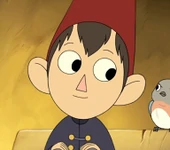
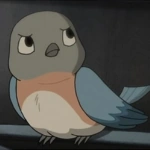
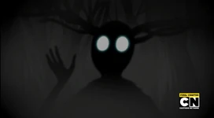
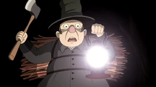
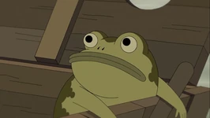
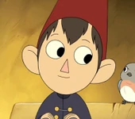
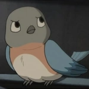
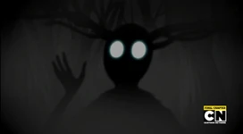
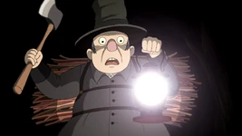
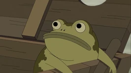

Welcome! This website is devoted to the cartoon Over the Garden Wall, the comic books by the same name, and the short film "Tome of The Unknown" that it was based on. Both Over the Garden Wall and "Tome of the Unknown" are written and directed by Patrick McHale and produced by Cartoon Network. The Characters Wirt Greg Beatrice The Beast The Woodsman Jason Funderburker (the frog) Summary Over the Garden Wall is an animated television miniseries created for Cartoon Network by Patrick McHale, known for his work on Adventure Time and The Marvelous Misadventures of Flapjack. It was based on McHale’s animated short, Tome of the Unknown. The miniseries consisted of ten episodes that were broadcast throughout the week of November 3rd to the 7th, in 2014. McHale directed all the episodes, with Nick Cross serving as art director and Nate Cash as supervising director. The show is considered a critical and popular success, with an 8.8/10 rating on IMDb and the recipient of the 2015 Reuben Award from the National Cartoonists Society. The story features two half-brothers, Wirt and Gregory, who have become lost in a mysterious wood called The Unknown and attempt to find their way home with the help of the Woodsman and Beatrice the bluebird. The atmosphere in The Unknown is generally menacing although there are many moments of playful whimsy. Many of the episodes are rooted in folktales and children’s stories from the 19th and early 20th centuries while the style of animation and storytelling borrow heavily from early cartoons. The series is inspired by myths and old wives' tales that have been passed down throughout the years. Tome of the Unknown is from Cartoon Network Studios shorts program and won the best animation short film at the Santa Barbara International Film Festival in February 2014. It is written and directed by Patrick McHale, who is also known for working on Cartoon Network's Adventure Time. The pilot episode aired in film festivals such as LA Shorts Fest and Ottawa in September 2013, and at Austin Film Fest in October 2013. On May 19, 2015 the pilot episode released on Cartoon Network. Since the show first aired! November 3, 2014 at 7pm
The Characters Wirt Greg Beatrice The Beast The Woodsman Jason Funderburker (the frog) Summary Over the Garden Wall is an animated television miniseries created for Cartoon Network by Patrick McHale, known for his work on Adventure Time and The Marvelous Misadventures of Flapjack. It was based on McHale’s animated short, Tome of the Unknown. The miniseries consisted of ten episodes that were broadcast throughout the week of November 3rd to the 7th, in 2014. McHale directed all the episodes, with Nick Cross serving as art director and Nate Cash as supervising director. The show is considered a critical and popular success, with an 8.8/10 rating on IMDb and the recipient of the 2015 Reuben Award from the National Cartoonists Society. The story features two half-brothers, Wirt and Gregory, who have become lost in a mysterious wood called The Unknown and attempt to find their way home with the help of the Woodsman and Beatrice the bluebird. The atmosphere in The Unknown is generally menacing although there are many moments of playful whimsy. Many of the episodes are rooted in folktales and children’s stories from the 19th and early 20th centuries while the style of animation and storytelling borrow heavily from early cartoons. The series is inspired by myths and old wives' tales that have been passed down throughout the years. Tome of the Unknown is from Cartoon Network Studios shorts program and won the best animation short film at the Santa Barbara International Film Festival in February 2014. It is written and directed by Patrick McHale, who is also known for working on Cartoon Network's Adventure Time. The pilot episode aired in film festivals such as LA Shorts Fest and Ottawa in September 2013, and at Austin Film Fest in October 2013. On May 19, 2015 the pilot episode released on Cartoon Network.